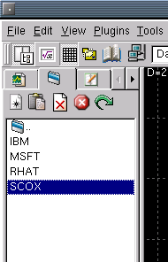
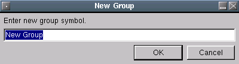
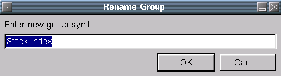

New Group
New GroupThe group tab allows you to create, edit, rename and delete groups. A group is simply a collection of charts defined by you.
The context menu functions are as follows:
New GroupHere you can create a new group. Selecting this will bring up a dialog where you are asked for a name to call your new group. The name must be unique, if not an error message will display.
After entering a name, enter the new group directory and use the add
item and delete item buttons to insert or delete group contents.
Displays a dialog that allows you to select charts to add to the
current group.
Deletes the selected group item.
 Delete Group
Delete GroupThis brings up a dialog that allows you to enter the new name of the selected group.
